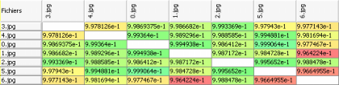

R�sultats
Lorsque que la premi�re partie de l'analyse est termin�e et que les trois panneaux sont affich�s, vous pouvez r�aliser
une premi�re analyse des r�sultats.

Sur la droite, la matrice des distances indique par des couleurs la probabilit� d'avoir affaire � un plagiat :
- Vert : Tout va bien
- Jaune : Il s'agit surrement d'une erreur
- Orange : Il y a un un risque, mais il est faible
- Rouge : Il y a un plagiat potentiel
Chaque case est associ�e � 2 fichiers, dont les noms sont contenus dans les en-t�tes de lignes et de colonnes.
Lorsque la deuxi�me partie de l'analyse est termin�e, un nouveau bouton apparait dans la fen�tre centrale.
Celui-ci permet de passer de la vue 2D (histogramme : ) � la vue 3D (nuage de points :  ).
).
Lorsque la vue 3D est s�lectionn�e, il est possible d'afficher ou masquer les �tiquettes contenant les noms de fichiers
via un second bouton  .
.
La liste d�roulante permet de s�lectionner un fichier afin de faire resortir le point qui lui correspond dans le
nuage (on peut l'utiliser directement, avec la molette de la souris, ou encore utiliser les fl�ches sur les c�t�s).